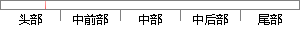

而现在年轻人在追求行止姿容的漂亮俊逸的个性上，又和魏晋风度的美学关相辅相成。
片段位置图

相似结果|
1
原句片段：而现在年轻人在追求行止姿容的漂亮俊逸的个性上，又和魏晋风度的美学关相辅相成。
相似片段 1：而现在年轻人在追求行止姿容的漂亮俊逸上个性上,又和魏晋风度的美学关相辅相成。 本回答由网友推荐 举报违规检举侵权投诉| 答案纠错 | 评论 21 2 ...
|
※ 片段修改建议 ※
近似词参考：- 现在：此刻 而今 目前 目下当今 如今
- 追求：寻求
- 行止：去处
- 漂亮：标致 大度 摩登 时兴 英俊 美丽
- 俊逸：飘逸
- 个性：本性
- 风度：风采
系统自动生成语句：而此刻年轻人在寻求去处姿容的标致飘逸的本性上，又和魏晋风采的美学关相辅相成。
注：本片段修改建议为系统自动生成，仅供参考。